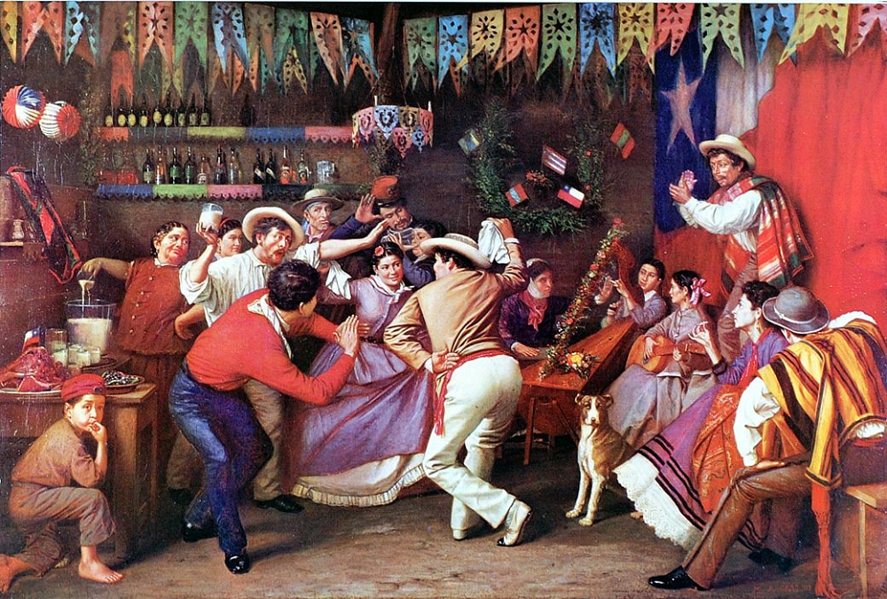

Cueca
Apunte 027
Inicio > Blog Bitácora de un músico > Apunte 027
Una danza, múltiples tradiciones
En septiembre de 1979, el gobierno militar chileno declaró oficialmente la cueca como danza nacional. El decreto la presentaba como una expresión de unidad nacional, capaz de representar la identidad chilena a pesar de la diversidad cultural del país. Sin embargo, la práctica musical reunida bajo esa denominación ya era heterogénea y comprendía diferentes repertorios regionales, conjuntos instrumentales, técnicas vocales y contextos sociales.
El reconocimiento nacional no creó esa diversidad, pero tampoco la eliminó. Más bien, formalizó una relación entre una determinada tradición musical y coreográfica y la representación de la nación. Esa relación se había desarrollado durante décadas a través de los estudios folclóricos, las instituciones educativas, las grabaciones comerciales y las actuaciones públicas (Spencer, 2021).
La categoría resultante oculta una distinción importante. La cueca designa una forma musical y coreográfica reconocible, pero también abarca prácticas históricamente situadas que no pueden reducirse a un único modelo de interpretación.
Una estructura musical compartida
A pesar de su diversidad regional, la cueca presenta características musicales y poéticas recurrentes. La forma cantada tradicional suele seguir una estructura de catorce versos, compuesta por una cuarteta, dos seguidillas y un remate final. Su organización rítmica combina agrupaciones asociadas con los compases de 6/8 y 3/4, produciendo la alternancia de acentos generalmente descrita como hemiola.
Estas características proporcionan un marco reconocible, pero no prescriben una interpretación uniforme. El fraseo melódico, los patrones de acompañamiento, el tempo, la articulación vocal y la relación entre músicos y bailarines varían según las tradiciones regionales y sociales. Incluso la estructura poética convencional admite excepciones y adaptaciones.
Esta distinción es particularmente importante porque la notación musical solo recoge una parte de la práctica. La organización rítmica de la cueca también depende de la articulación del acompañamiento instrumental, la acentuación de las frases cantadas y los movimientos de los bailarines. Por lo tanto, las variaciones interpretativas pueden ser considerables, incluso cuando la forma musical subyacente sigue siendo reconocible (Loyola & Cádiz, 2010).
La existencia de una estructura compartida no implica la existencia de un único sonido.
Instrumentos y prácticas regionales
La diversidad instrumental es una de las características más evidentes de la cueca chilena.
En las zonas rurales del centro de Chile, la guitarra ha ocupado tradicionalmente un lugar importante, acompañando a las cantoras y proporcionando con frecuencia tanto el soporte armónico como la articulación rítmica. En algunas interpretaciones, el instrumento también se golpea o se tañe para reforzar el ritmo, mientras que las palmas aportan una capa percusiva adicional.
En otras regiones, la configuración instrumental cambia considerablemente. Las cuecas del norte pueden interpretarse sin canto, utilizando bandas de instrumentos de viento o conjuntos que incorporan aerófonos andinos y percusión. En Chiloé, el acordeón, la guitarra y el bombo acompañan tradiciones vocales cuyas convenciones interpretativas difieren de las del centro de Chile.
La cueca urbana introduce otras combinaciones. Los estilos comúnmente denominados chilenera, brava o chora, asociados particularmente con los barrios populares de Santiago y Valparaíso, han empleado guitarras, acordeón, piano y pandero. El arpa también forma parte de la historia instrumental más amplia de la cueca y no puede asociarse exclusivamente con la interpretación rural (Biblioteca Nacional de Chile, s.f.).
Estas diferencias complican cualquier intento de identificar un conjunto instrumental definitivo. La guitarra puede proporcionar la base rítmica en un contexto, mientras que otra configuración recurre al piano, el acordeón o los instrumentos de viento. La percusión puede producirse mediante instrumentos específicos, con la propia guitarra o a través de la participación de bailarines y espectadores.
La morfología instrumental, por sí sola, no puede explicar estas diferencias. Lo importante es cómo se organizan determinados recursos sonoros dentro de las tradiciones interpretativas locales.
Voces y comunidades de intérpretes
La distinción entre la cueca rural y la urbana también implica diferencias en la organización vocal y en las relaciones sociales entre los intérpretes.
En la tradición urbana conocida como canto a la rueda, los cantores se organizaban tradicionalmente en semicírculo o en fila e intervenían sucesivamente para mantener la continuidad de la interpretación musical. Esta práctica se desarrolló en ambientes de canto predominantemente masculinos, asociados con oficios urbanos, mercados y lugares de reunión populares.
Su estética vocal enfatiza la proyección, la coordinación colectiva y la capacidad de sostener un intercambio continuo entre los cantores. La disposición espacial de los intérpretes forma, por lo tanto, parte del sistema musical: cada voz interviene dentro de una secuencia establecida, en lugar de funcionar simplemente como una voz solista independiente.
Esta organización difiere de muchas tradiciones rurales de canto y de los conjuntos folclóricos que actúan sobre un escenario, donde las partes vocales pueden distribuirse según otras convenciones interpretativas.
Sin embargo, la historia de la cueca urbana no es exclusivamente masculina. La investigación de Christian Spencer documenta la aparición de conjuntos femeninos de cueca urbana durante los primeros años del siglo XXI, incluidos grupos que adoptaron y reinterpretaron el canto a la rueda. Su participación cuestionó supuestos establecidos sobre la relación entre técnica vocal, género y autoridad musical (Spencer, 2011).
La transformación de la tradición, por ende, no se produjo únicamente a través de cambios en la instrumentación o el repertorio, sino también mediante modificaciones en quiénes podían participar y bajo qué condiciones.
La construcción de un sonido nacional
La identificación de la cueca con la nacionalidad chilena se desarrolló mucho antes de su reconocimiento oficial en 1979.
Durante la primera mitad del siglo XX, las grabaciones comerciales y la radiodifusión contribuyeron a la consolidación de la música típica chilena, una categoría de música popular estrechamente asociada con el imaginario rural del centro de Chile. Conjuntos como Los Cuatro Huasos, Los Huasos Quincheros y Los Provincianos contribuyeron a establecer un repertorio reconocible de cuecas y tonadas para el público urbano.
Este repertorio no consistía simplemente en música rural trasladada intacta a los estudios de grabación. Incluía arreglos, armonizaciones vocales, una organización profesional de los conjuntos y presentaciones escénicas. Las interpretaciones resultantes recurrían a referencias musicales rurales, pero las adaptaban al entretenimiento comercial.
La industria discográfica tuvo una actividad particularmente intensa en este proceso durante las décadas de 1940 y 1950. En 1942, el sello Victor publicó Cantares de Chile, una colección de doce piezas de música chilena distribuidas en seis discos. Durante el mismo período, se multiplicaron los programas de radio dedicados a los repertorios nacionales, mientras que las instituciones educativas y culturales promovían la recopilación, clasificación y presentación pública de materiales folclóricos (Costa Garcia, 2009).
Estos procesos hicieron que determinadas representaciones del Chile rural adquirieran una presencia cada vez mayor en los medios y llegaran a un público más amplio. La figura del huaso, acompañada de una vestimenta característica, un repertorio musical y unas convenciones interpretativas reconocibles, adquirió un lugar destacado en la representación pública de la tradición nacional.
Sin embargo, esta imagen no abarcaba la totalidad de las prácticas de la cueca. Las tradiciones urbanas de las clases trabajadoras, las formas instrumentales del norte y otras variantes regionales continuaron existiendo al margen de los modelos que alcanzaron mayor difusión a través de los medios comerciales, o junto a ellos.
La nacionalización y sus contradicciones
La declaración oficial de la cueca como danza nacional de Chile, firmada el 18 de septiembre de 1979 y publicada el 6 de noviembre, no fue meramente simbólica. El Decreto N.º 23 estableció que las instituciones estatales debían promover su enseñanza, difusión y estudio. También dispuso la realización de un concurso nacional anual de cueca para estudiantes de enseñanza básica y media.
Durante la dictadura militar, esta declaración formó parte de un esfuerzo más amplio por definir y promover determinadas representaciones de la cultura nacional chilena. Una imagen particular de unidad cultural pasó a ocupar un lugar central en las políticas públicas.
Sin embargo, la cueca ocupaba simultáneamente otros espacios políticos y sociales. La cueca brava urbana mantenía sus vínculos con los barrios populares y con ambientes musicales diferentes de los que caracterizaban la representación folclórica oficial. La cueca sola, interpretada por mujeres que exigían información sobre sus familiares detenidos y desaparecidos durante la dictadura, transformó la danza tradicionalmente ejecutada en pareja en una expresión de ausencia y denuncia política (Rojas Sotoconil, 2009).
Así, una misma tradición musical y coreográfica podía servir para representar concepciones contrapuestas de la identidad nacional.
La declaración formal de una danza nacional no supuso el control de todas sus formas de interpretación o ejecución.
Canon y continuidad
La construcción de la cueca como tradición nacional implicó mucho más que la selección de un repertorio. También configuró las categorías mediante las cuales se describían, enseñaban, grababan y evaluaban las prácticas musicales.
La investigación folclórica y la enseñanza institucional contribuyeron a establecer descripciones formales de la danza. Los intérpretes comerciales familiarizaron a grandes públicos con determinados arreglos. El reconocimiento estatal reforzó la asociación entre la cueca y la identidad nacional. Cada uno de estos procesos contribuyó a la circulación de ciertos modelos sin eliminar necesariamente las alternativas.
Christian Spencer (2021) ha descrito cómo la propia literatura académica participó en esta construcción. Los debates sobre los orígenes, la etnicidad, la autenticidad y la nacionalidad fueron reforzando gradualmente una imagen de la cueca como género unificado e históricamente continuo, incluso cuando las evidencias apuntaban a procesos de transmisión y transformación más complejos.
Esta observación no invalida la utilidad de la categoría cueca. Sus características musicales compartidas y sus conexiones históricas son reales. El problema surge cuando una categoría descriptiva se convierte en una definición normativa de cómo debería sonar la música, quiénes deberían interpretarla o qué prácticas pueden considerarse auténticas.
El desarrollo continuo de las tradiciones rurales, las comunidades de intérpretes urbanos, los conjuntos femeninos y las nuevas interpretaciones demuestra que el canon nacional nunca ha agotado las posibilidades musicales de la cueca.
Su historia, por lo tanto, no es un recorrido desde la diversidad hacia un modelo definitivo. Es una relación continua entre formas musicales reconocibles, prácticas interpretativas cambiantes y las instituciones que intentan representarlas.
Lecturas
- Biblioteca Nacional de Chile. s. f. "La cueca." Memoria Chilena. https://www.memoriachilena.gob.cl/602/w3-article-3510.html
- Biblioteca Nacional de Chile. s. f. "Forma coreográfica y musical según la zona geográfica." Memoria Chilena. https://www.memoriachilena.gob.cl/602/w3-article-93130.html
- Chile, Ministerio Secretaría General de Gobierno. 1979. Decreto N.º 23: Declara a la cueca danza nacional de Chile. Promulgado el 18 de septiembre y publicado el 6 de noviembre. Biblioteca del Congreso Nacional de Chile.
- Costa Garcia, Tânia da. 2009. "Canción popular, nacionalismo, consumo y política en Chile entre los años 40 y 60." Revista Musical Chilena 63 (212): 11-28.
- Loyola, Margot, y Osvaldo Cádiz. 2010. La cueca: danza de la vida y de la muerte. Valparaíso: Ediciones Universitarias de Valparaíso.
- Rojas Sotoconil, Araucaria. 2009. "Las cuecas como representaciones estético-políticas de chilenidad en Santiago entre 1979 y 1989." Revista Musical Chilena 63 (212): 51-76.
- Spencer Espinosa, Christian. 2011. "Finas, arrogantes y dicharacheras. Representaciones de género en la performance de los grupos femeninos de cueca urbana en Santiago de Chile (2000–2010)." TRANS: Revista Transcultural de Música 15.
- Spencer Espinosa, Christian. 2021. "Principales ejes de estudio de la cueca chilena: una actualización." Neuma 14 (1): 30-55.